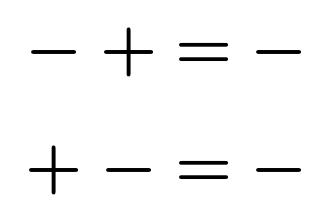
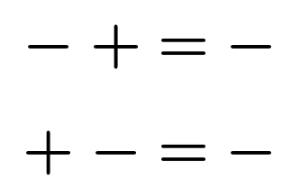
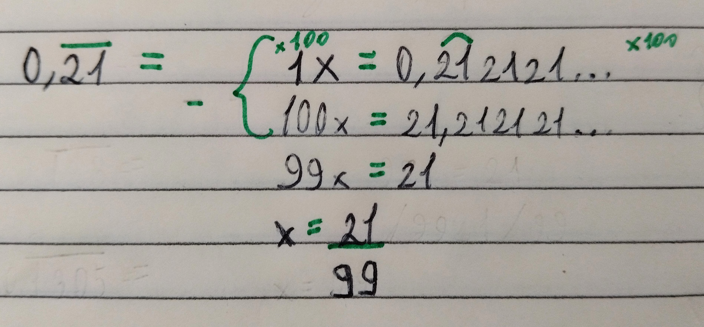
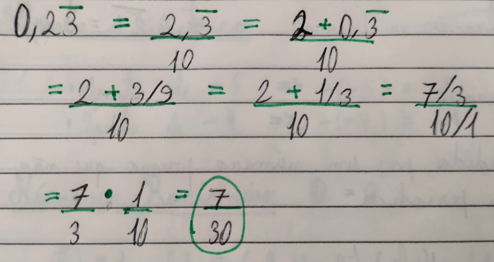
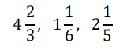
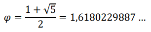

Sistemas de Numeração
Nesse semestre foi trabalhado principalmente Sistemas de Numeração Bom, o que seria um sistema de numeração? Basicamente é um método que utilizamos para representar quantidades numéricas através de diferentes símbolos, por exemplo o sistema decimal, também conhecido como sistema de base 10 (0, 1, 2, 3, 4, 5, 6, 7, 8, 9), que é o mais utilizado nos dias de hoje. Vendo assim é possível criar um sistema com qualquer Base de 2 até o que você conseguir pensar, com nomes e regras próprias de conversão como: binário, octal, hexadecimal, etc. E esses sistemas que iremos trabalhar
Sistemas de Numeração
Conjuntos Numéricos
Os números que conhecemos e que lidamos no nosso dia a dia, podem ser agrupados segundo suas características. O diagrama abaixo oferece uma representação da relação entre os conjuntos numéricos que conhecemos.
Números Naturais ℕ
O conjunto dos números naturais é representado por
ℕ = { 0, 1, 2, 3, 4, 5, 6, 7, 8, 9... }
O primeiro número é o zero. O sucessor do zero é o 1. O sucessor do 1 é o 2. E assim por diante. Sempre poderemos obter o sucessor de um número natural, somando uma unidade a ele ( n + 1 )
Um subconjunto de ℕ é o conjunto ℕ*, excluindo o zero.
ℕ* = ℕ - {0} = { 1, 2, 3, 4, 5, 6, 7, 8, 9... }
Números Inteiros ℤ
O conjunto dos números inteiros é representado por
ℤ = {… , −4, −3, −2, −1, 0, 1, 2, 3, 4, … }
O conjunto dos naturais é subconjunto dos inteiros:
Um subconjunto de ℤ é o conjunto ℤ*, excluindo o zero.
ℤ* = ℤ − {0} = {… , −3, −2, −1, 1, 2, 3, … }
Temos ainda o conjunto dos inteiros não negativos que é representado por ℤ+, em que inclui todos os inteiros positivos mais o zero. E temos os inteiros não positivos, que inclui todos os negativos mais o zero
ℤ+ = {0, 1, 2, 3, 4, 5, 6, … } → 𝐼𝑛𝑡𝑒𝑖𝑟𝑜𝑠 𝑛ã𝑜 𝑛𝑒𝑔𝑎𝑡𝑖𝑣𝑜
ℤ- = {… , −4, −3, −2, −1, 0} → 𝐼𝑛𝑡𝑒𝑖𝑟𝑜𝑠 𝑛ã𝑜 𝑝𝑜𝑠𝑖𝑡𝑖𝑣𝑜
Simétrico e Oposto
O oposto ou simétrico de +5 é -5. Isso significa que tanto o +5 como o -5 estão a mesma distância do zero.
A adição de um número inteiro ao seu oposto, resulta em zero: (+3) + (-3) = + 3 – 3 = 0. O oposto do oposto de + 5, resulta no próprio número + 5: - (-5) = +5. Nas operações em ℤ, é preciso cuidar as regras de sinais:
 

Números Racionais ℚ
Há operações de divisão em ℤ que resultam em valores que não fazem parte de ℤ. Por exemplo: a divisão de -3 por 2, sabemos que resulta em -1,5. Então, esse número “quebrado” precisa pertencer a outro conjunto numérico.
O conjunto ℚ é formado por todos os números que podemser escritos na forma de fração, com numerador e denominador inteiros e denominador diferente de zero.
Simbolicamente, escrevemos assim:
ℚ = {𝑥 | 𝑥 = 𝑎/𝑏, 𝑐𝑜𝑚 𝑎 ∈ ℤ, 𝑏 ∈ ℤ 𝑒 𝑏 ≠ 0}
Quando temos uma fração com denominador 1 ou uma fração aparente (aquela cujo numerador é um múltiplo do denominador), temos, na verdade, um número inteiro. Assim, temos que o conjunto dos naturais e o conjunto dos inteiros são subconjuntos dos racionais.
- Qualquer numero dividido por um número primo que não seja primo dará uma dízima periódica
Os decimais(após a vírgula) podem ter suas casas finitas ou infinitas. No caso de serem infinitas, é interessante observar que a parte decimal segue um padrão de repetição, ou seja, é uma dízimas periódicas.
Um jeito mais simplificado para escrever as dízimas periódicas é colocando um traço acima do numero que se repete como no exemplo:
-
Transformação de frações em números decimais
Para realizar a transformação é necessário realizar a divisão de um numero pelo outro.
-
Transformação de números decimais finitos em fraçãoes
Para realizar a transformação é necessário realizar a contagem de quantos números tem depois da vírgula e colocar a mesma quantidade de zeros nas potências de 10 no denominador.
-
Transformação de dizíma periódica em fraçãoes
Para realizar a transformação é necessário realizar a contagem de quantos números se repetem e colocar a mesma quantidade de 9 no denominador, como no exemplo tembem é possível fazer uma conta
-

No caso de uma dizíma periódica composta é necessário separar e resolver a dizíma e depos juntar tudo depois, como no exemplo:
-

Número Misto
É um tipo de representação das frações impróprias (que são aquelas que representam quantidades maiores do que 1, ou seja, o numerador é maior do que o denominador).
Como no exemplo:
No esquema seguinte, temos a conversão de número misto em fração imprópria e vice versa, a partir das operações de adição e divisão.
- A raiz quadrada, cúbica, etc. de um número que não pode ser extraído desta raiz.
- Números obtidos a partir de outro número irracional.
- O número 𝜋: é obtido a partir da divisão do comprimento de uma circunferência pelo seu diâmetro.
- O número de ouro: é um número encontrado em muitas proporções da natureza e em obras de arte.
Números Irracionais ℚ
Algumas medidas não podiam ser representadas por um número decimal finito ou por uma dizima periódica necessitando criar outro conjunto. Ao medir a diagonal de um quadrado de lado 1, chegamos a um número que não é racional.
𝑑2 = 12 + 12
𝑑2 = 2
𝑑 = √2
Como calcular esse número? Ou seja, qual número que elevado ao quadrado dá 2.
12 = 1 (𝑚𝑒𝑛𝑜𝑟)
22 = 4 (𝑚𝑎𝑖𝑜𝑟) √2 𝑒𝑠𝑡á 𝑒𝑛𝑡𝑟𝑒 1 𝑒 2
1,42 = 1,96(𝑚𝑒𝑛𝑜𝑟)
1,52 = 2,25 (𝑚𝑎𝑖𝑜𝑟) √2 𝑒𝑠𝑡á 𝑒𝑛𝑡𝑟𝑒 1,4 𝑒 1,5
E por ai vai infinitamente Portanto, √2 não é racional. Assim,
dizemos que √2 é um número IRRACIONAL.
- √2, −√3, √5, 3√2, −3√9, …
- 1 + √2 , √3/2, …
- 𝜋 = 3,141592 …
- 
O conjunto dos irracionais não contém o conjunto dos racionais. Se um número é irracional, então não pode ser racional, portanto, nem inteiro, muito menos natural. São conjuntos disjuntos.

fonte: documentos prof. Váleria